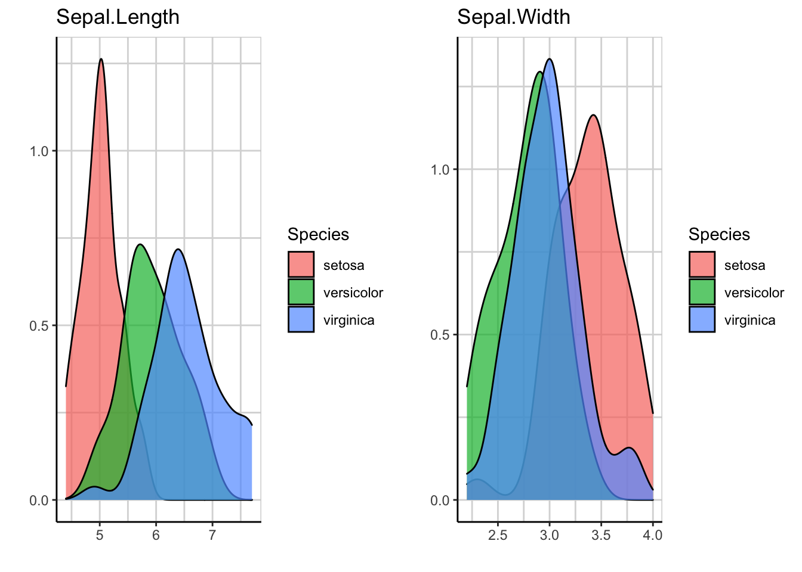

第 10 章 explore包
这个包可以用于简化探索性数据分析，并且可以在RStudio中以交互式的形式进行。
# install.packages("explore")
library(dplyr)
library(explore)data(iris) # 加载数据集10.1 包的使用
explore(iris) # 探索数据集variable是我们想要探索分析的变量，在右边会显示该变量数据的分布图，下面显示的是该变量的描述统计信息。report all按钮可以在浏览器显示数据集中所有变量的统计描述信息，同样是图形和数据相结合。target中添加变量，比如说添加Species变量，我们可以看到右边会显示两个变量之间的分布关系。
运行下面的代码也能得到同样的结果。
## 会在电脑默认路径explore文件里生成一个report.html，打开即可
iris %>% report(output_file = "report.html",
output_dir = "explore")## 显示数据集所有变量与Species变量的关系
iris %>%
report(output_file = "report2.html",
output_dir = "explore",
target = Species)target可以是连续变量，也可以是分类变量。如果和探索变量都是连续变量，可以分析相关性。
iris %>% explore(Sepal.Length, Petal.Length)iris %>% explore(Sepal.Length, Petal.Length,
target = Species)iris %>%
select(Sepal.Length, Sepal.Width) %>% # 选两个变量
explore_all()iris %>%
select(Sepal.Length, Sepal.Width, Species) %>%
explore_all(target = Species) # 添加target变量